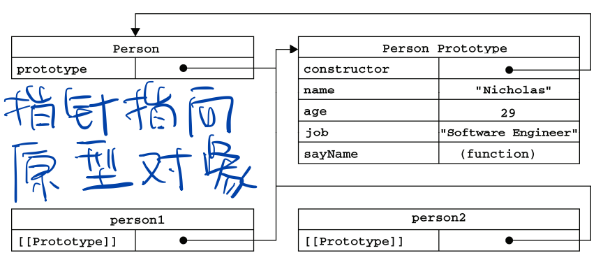

前端芝士补完计划 之 JavaScript-对象
目录
1. 以下选项中，能被 encodeURIComponent() 函数编码的是
1. 以下选项中，能被 encodeURIComponent() 函数编码的是
A.*; B.~; C.$; D. -
encodeURLComponent() 函数用于编码 URL 中的某一段，只有 9 个字符不会被编码 (!’()*-._~)。除了 C 之外都不能被编码。
请说明 JS 中原生对象（native objects）和宿主对象（host objects）的区别
原生对象是由 ECMAScript 规范定义的对象，所有内置对象都是原生对象，例如 Array、Date 和 RegExp 等。
宿主对象是由宿主环境（如浏览器）定义的对象，用于完善 ECMAScript 的执行环境，例如 Document、Location 和 Navigator 等。
全局函数 eval() 有什么作用
eval() 可以执行一段字符串中的脚本，它只有一个参数，如果传入的参数是非字符串类型的值，那么就直接返回该值。如果传入字符串字面量，那么将被作为 JavaScript 代码进行编译。当编译失败时，抛出语法错误；编译成功时执行这段代码，最后返回一个表达式或语句的值。eval() 的具体用法如下所示
eval(1); // 1
var str = "var total = 100; console.log(total)"
eval(str) // 100
在 eval() 中创建的任何变量或函数都不会被提升，因为在解析代码的时候，它们被包含在一个字符串中；它们只在 eval() 执行的时候创建。因此如果在调用 eval() 之前使用函数中创建的变量，将会抛出未定义的异常，如
function sum() {
var digit = 1;
console.log(total); // 抛出未定义异常
eval("var total = 100"); // 定义变量
console.log(total); // total 和 digit 的作用域相同
}
在严格模式中，eval() 不能改变作用域，因此也就不能定义新的变量或函数，如
function sun() {
"use strict";
eval("var total = 100"); // 定义变量
console.log(total); // 抛出未定义的异常
}
eval() 能够编译代码字符串，它能力非常强大，同时也非常危险。如果传入的是恶意代码，将会威胁站点安全，造成不可估量的损失。（XSS 攻击？
下列选项中，属于 JS 内置对象的是（）
A. String; B. Function; C. RegExp; D. Array;
ABCD。当 JS 解释器启动（也就是浏览器加载新页面）时，会有一些可用的内置对象（built-in objects）被初始化，这些内置对象包括：全局对象、String、Boolean、Number、Object、Function、Array、Date、RegExp、Error、Math 和 JSON。
编写一个函数，它没有参数，返回值是一个数组，数组内是 8 个随机且不重复的整数，整数范围在 [5, 20] 之间。
const randomArray = () => {
const res = []
const pushNum = () => {
// floor(5 + [0 ~ 16))
const num = Math.floor(Math.random() * 16 + 5)
if (res.includes(num)) {
pushNum()
} else {
res.push(num)
}
}
for(let i = 0; i < 8; i++) {
// let newNum = getNum()
pushNum()
}
return res
}
console.log(randomArray())
教科书答案
function getArray() {
var arr = []
var number = 0
for (var i = 0; i < 8; i++) {
number = Math.round(Math.random() * 15);
number += 5;
if (arr.indexOf(number) >= 0) {
i--;
} else {
arr.push(number);
}
}
return arr;
}
console.log(getArray())
在以下选项中，表示全局函数的有（）
A. ceil(); B. parseInt(); C.stringify(); D. isNaN();
Math.ceil(), JSON.stringify()
为数字添加两个方法：add() 和 minus()，分别表示加法和剪发，例如下面的代码相当于表达式 1+2-3
(1).add(2).minus(3)
Number.prototype.add = function (addNum) {
return this.valueOf() + addNum
}
Number.prototype.minus = function (minusNum) {
return this.valueOf() - minusNum
}
(1).add(2).minus(3) // 0
请简单描述一下你所理解的原型链
对象之间通过原型关联到一起，就好比用一条锁链将一个个对象连接在一起，在将各个对象挂钩后，最终形成了一条原型链。在读取对象的一个属性时，会现在对象中查询自有属性，如果不存在，那么再沿着原型链向上搜索匹配的集成属性，直到找到或到达原型链的顶端，才停止搜索。
// TODO: 待补充
执行下面的代码，得到的结果为
Array.prototype.isPrototypeOf([1, 2])
true。isPrototypeOf() 方法用于判断调用此方法的对象是否存在于指定对象的原型链中。此处调用该方法的是数组的原型对象，而方法的实参是一个数组字面量，因此得到的结果为 true。
执行下面的代码后，对 name 属性的描述中，错误的是（）
var obj = {age: 18}
Object.defineProperty(obj, "name", {
configurable: false
});
Object.defineProperty(obj, "age", {
configurable: false
});
obj.hobby = 'anime'
obj.name // undefined
obj.name = 'name'
obj.name // undefined
A. 可以用 delete 运算符删除该属性；B. 可以再把该属性的 configurable 特性设为 true；C. 可以再修改为可枚举特性（enumerable）；D. 可写特性（writable）只能从 true 改为 false。
ABC。在 ECMAScript 5 中，属性能够设置自身的特性。当属性的 configuable 特性为 false 时，将会有以下五种限制：
- （1）不能用 delete 运算符删除此属性，如果强行删除，那么再严格模式中会抛出错误；
- （2）不能再变回可配置；
- （3）不能再修改成可枚举特性；
- （4）可写特性只能从 true 改为 false，不能从 false 改为 true。
- （5）不能变成访问器属性。
数据属性和访问器属性
对象的属性和方法创建时都会有一些特征值，JS 是通过这些特征值来定义它们的行为的。ECMA-262 定义这些特性是为了实现 JS 引擎用的，因此在 JS 中不能直接访问它们。ECMA 中有两种属性：数据属性和访问器属性。
（1）数据属性
数据属性有 4 个描述其行为的特性
|特性|默认值|说明|
|–|–|–|
|configurable|true|表示能否通过 delete 删除属性从而重新定义属性，能否修改属性的特性，或者能否把属性修改为访问器属性。|
|enumerable|true|表示能否通过 for-in 循环返回属性。|
|writable|true|表示能否修改属性的值。|
|value|undefined|包含这个属性的数据值。读取属性值的时候，从这个位置读；写入属性值的时候，把新值保存在这个位置。|
var person = {
name: "cotwelf"
};
这里创建了一个名为 name 的属性，为它指定的值是 "cotwelf"。也就是说，[[Value]]特性将被设置为 "cotwelf"，其余特性被设置为 true。要修改属性默认的特性，必须使用 ES5 的 Object.defineProperty() 方法（IE8 不支持）。
Object.defineProperty(person, "name", { // 老版本浏览器不支持
writable: false,
value: "sylvia"
});
console.log(person.name) // sylvia
person.name = "xiuxiuxiu" // 严格模式下会报错
console.log(person.name) // sylvia（这里可以看到，并没有修改成功
var descriptor = Object.getOwnPropertyDescriptor(person, "name"); // 读取特性
descriptor.writable // false
descriptor.value // 'sylvia'
某些属性不想被误删时，可以用这种方式。等于是常量了。
（2）访问器属性
设置一个属性的值会导致其他属性发生变化，这是使用访问器属性的常见方式。
|特性|默认值|说明|
|–|–|–|
|configurable|true|表示能否通过 delete 删除属性从而重新定义属性，能否修改属性的特性，或者能否把属性修改为访问器属性。|
|enumerable|true|表示能否通过 for-in 循环返回属性。|
|get|undefined|在读取访问器属性时调用，该函数负责返回有效的值。|
|set|undefined|在写入访问器属性时调用，该函数负责决定如何处理数据。|
get 与 set 一般成对出现，但非强制，如果只有其中一个特性，尝试另一个特性（get/set）的时候会报错。
var book = {};
Object.defineProperties(book, { // defineProperties() 定义多个属性，老版本浏览器不支持。
_year: {
value: 2004
},
edition: {
value: 1
},
year: {
get: function(){
return this._year; // book.year 会返回 book._year 的值
},
set: function(newValue){
if (newValue > 2004) {
this._year = newValue; // 重新赋值 book._year
this.edition += newValue - 2004; // 重新赋值 book.edition
}
}
}
});
book.year = 2005;
console.log(book.edition); // 2
如何判断对象中的某个属性是继承而来的？
将 in 运算符和 Object 对象的 hasOwnProperty() 方法组合使用，能够检测一个属性是否是继承属性，它们的用法如下表所示。
|检测方式|描述|
|–|–|
|in 运算符|在对象的自有属性或继承属性中包含要匹配的属性时，就返回 true，否则返回 false|
|使用 Object 的 hasOwnProperty()|在对象的自有属性中包含要匹配的属性时，就返回 true，否则返回 false。|
只要 in 运算符返回 true，而 hasOwnProperty() 方法返回 false，就能确定这是个继承属性，代码如下所示。
function isInheritProperty(obj, name) {
return name in obj && !obj.hasOwnProperty(name);
}
var obj1 = { name: "strick" }
var obj2 = Object.create(obj1);
isInheritProperty(obj2, "name");
另外，如果继承的对象上定义了被继承对象同样的属性，原被继承对象上的属性不会改变
const otaku = {
seikaku: 'okashii'
}
const xiuwen = Object.create(otaku)
xiuwen.siekaku = 'kawaii =w='
console.log(xiuwen)

用 new 运算符创建对象时，例如 new Fn()，具体的创建过程
大致可分为 4 步
- (1) 创建一个新的空对象；
- (2) 将构造函数的作用域赋给新对象（因此 this 就指向了这个新对象）；
- (3) 执行构造函数中的代码（为这个新对象添加属性）；
- (4) 返回新对象。
new 共经历了四个过程。
```javascriptvar Otaku = function () { this.seikaku = 'okashii' }; Otaku.prototype.kareshi = 'nai'; var xw = new Otaku();
// 我们先定义一个构造函数
var Otaku = function () {
this.seikaku = ‘okashii’
};
Otaku.prototype.kareshi = ‘nai’;
// 创建我们自己的 new 方法
const newObj = (constructorFn) => {
// 1、创建了一个空对象
var obj = new Object();
// 2、设置原型链
obj.proto = constructorFn.prototype;
// 3、让 constructorFn 的 this 指向 obj，并执行 constructorFn 的函数体
var result = constructorFn.call(obj);
// 4、判断fn的返回值类型，如果是值类型，返回obj。如果是引用类型，就返回这个引用类型的对象。这里是构造函数的特性
var obj1 = null
if (typeof result == “object”){
obj1 = result;
} else {
obj1 = obj;
}
return obj1
}
const xw = newObj(Otaku)
具体可以看官方文档 [Runtime Semantics: EvaluateNew(constructProduction, arguments)](https://262.ecma-international.org/6.0/#sec-evaluatenew)
[>> 返回目录](#目录)
### 下面代码最终的打印结果是
```JavaScript
var obj1 = {
names: []
};
var obj2 = obj1.names;
obj2.push("strick");
console.log(obj1.names);
["strick"]。数组方法 push() 能够改变原始数组。
obj1 中的 names 属性，它的值是一个空数组，数组也是一个对象。将 obj1 的 names 属性赋给 obj2 后，obj2 就能引用 names 的值（即数组），因为【数组方法 push() 能够改变原始数组】，所以 names 属性最终的值为
["strick"]
下面是一段用于对象继承的代码，请指出其中的不足，并提出改进建议。
function Super(age) {
this.names = [];
this.age = age;
}
function Sub(age) {
}
Sub.prototype = Super.prototype
继承是面向对象语言的三大特性之一，JS 只支持实现继承（而像 Java 那类语言还支持接口继承），并且主要依靠原型链来实现。代码中的继承有两个不足的地方，如下所列，每个不足之处都给出了相应的改进方法。
- （1）不能向超类 Super 的构造函数传递参数（超类中需要接收一个 age 参数），也不能使用超类中的自有属性（如 names 和 age）。改进的犯法就是在子类 Sub 的构造函数中，显式地调用超类的构造函数，如下所示。
function Sub(age) { Super.call(this, age) } - （2）在子类 Sub 的原型中添加属性或方法会影响超类的原型，例如给子类添加一个 getShool() 方法，其实就是在超类的原型上定义这个方法。以下代码所示功能为创建一个超类的实例，也能成功调用 getShool() 方法。
改进方法就是用一个空的函数 F() 做中介，然后将超类的原型赋给这个空函数的原型，子类的原型再指向这个空函数的实例，这样就能避免修改超类的原型，如下Sub.prototype.getShool = function() { return "university"; }; var parent = new Super(30) parent.getShool() // "university"function create(object) { function F() {} F.prototype = object; return new F(); } Sub.prototype = create(Super.prototype);*执行下面的代码，obj1 对象的 name 属性值为（）
{ age: 20 }。obj2 变量一开始被赋予的是 obj1 对象的指针，随后又指向了一个新的对象：{ age: 20 }。新对象的指针同时也赋给了 obj1 对象的 name 属性。var obj1 = { age: 10 }; var obj2 = obj1; obj1.name = obj2 = { age: 20 };
给定两个字符串，检测是否是改变字母顺序而得到的字符串，例如 “mena” 是打乱的 “name” 中的字母得到的
const stringTest = (str1, str2) => {
const arr1 = str1.split('')
const arr2 = str2.split('')
if (arr1.length !== arr2.length) {
return false
}
arr1.forEach(i => {
if(arr2.includes(i)) {
arr2.splice(arr2.indexOf(i), 1)
}
})
console.log(arr2)
if (arr2.length === 0) {
return true
}
return false
}
教科书答案（牛蛙！！！！！全然没想到
function isEqual(str1, str2) {
str1 = str1.split('').sort().join("")
str2 = str2.split('').sort().join("")
return str1 = str2
}
*JSON 格式的数据与 XML 格式的数据相比，有哪些优势？
JSON 格式的数据主要有如下 4 个优势：
- （1）语法格式更简单；
- （2）层次结构更清晰；
- （3）所用字符数更少；
- （4）数据解析更直接。
下面是一段 JSON 格式的数据，符合 JSON 规范的属性是（）
{
"age": 010,
"height": 1.,
"name": 'xiuwen',
"weight": 20
}
weight。JSON 的数字和字符串规范:
- 数字: 不能有前导零，不能省略浮点数整数部分和小数部分的 0
- 字符串: 必须用双引号包裹，可以使用任意数量的 Unicode 字符（不包含 “ \ 及转义字符，如 \n）
将下面的对象序列化为 JSON 字符串，在序列化时去除 name 属性，并将数组的第一个元素变为 null
var json = {
"name": "xiuwen",
"age": 18,
"like": ["anime", "game", "music"]
};
JSON.stringify(json, (key, value) => {
if(key === 'name') {
return undefined;
}
if (key === "0") {
return undefined; // 数组中第一个值将变为 null
}
return value
})
关于 JSON.stringify(value[, replacer [, space]]) 中的后两个参数
replacer
var json = {
"name": "xiuwen",
"age": 18,
"like": ["anime", "game", "music"]
};
replacer 是 function：
- 如果返回一个 Number, 转换成相应的字符串作为属性值被添加入 JSON 字符串。
let replacer = (key, value) => { if (key === 'name') { return 2333 } return value } JSON.stringify(json, replacer) // '{"name":2333,"age":18,"like":["anime","game","music"]}' - 如果返回一个 String, 该字符串作为属性值被添加入 JSON 字符串。
let replacer = (key, value) => { if (key === 'name') { return 'xiuxiuxiu' } return value } JSON.stringify(json, replacer) // '{"name":"xiuxiuxiu","age":18,"like":["anime","game","music"]}' - 如果返回一个 Boolean, “true” 或者 “false” 作为属性值被添加入 JSON 字符串。
let replacer = (key, value) => { if (key === 'like') { return false } return value } JSON.stringify(json, replacer) // '{"name":"xiuwen","age":18,"like":false}' - 如果返回任何其他对象，该对象递归地序列化成 JSON 字符串，对每个属性调用 replacer 方法。除非该对象是一个函数，这种情况将不会被序列化成 JSON 字符串。
let replacer = (key, value) => { if (key === 'like') { return ["code", "eiga"] } if (key === "1") { return undefined // 因为上面的 like 的每个属性也调用 replacer 方法，所以 like[1] 变为 null } return value } JSON.stringify(json, replacer) // '{"name":"xiuwen","age":18,"like":["code",null]}' - 如果返回 undefined，该属性值不会在 JSON 字符串中输出。
replacer 是 arrlet replacer = (key, value) => { if (key === 'like') { return ["code", "eiga"] } if (key === "age") { return undefined // 注意这里，key 非数组 index 的时候返回 undefined 才会删除属性，否则只会置 arr[index] 为 null } return value } JSON.stringify(json, replacer) // '{"name":"xiuwen","like":["code","eiga"]}'
JSON.stringify() 一般和 JSON.parse() 结合 localstorage 使用，注意在 JSON.parse() 的 value 是 undefined、NaN、Infinity、函数、对象实例、变量或正则表达式时会报错，可以用 try catch。let replacer = ["like"] JSON.stringify(json, replacer) // '{"like":["anime","game","music"]}'
另外，JSON 可以实现简单数据类型的深拷贝
function deepCopy(obj) {
return JSON.parse(JSON.stringify(obj));
}
const obj1 = {
a: 1,
b: 'test',
c: {
d: [1, 2],
e: () => {}, // 这里 e 并没有被拷贝
}
}
let obj2 = deepCopy(obj1) // {a: 1, b: 'test', c: { d: [1, 2] }}
什么是基本包装类型
为了便于操作基本类型值，ES 提供了 3 个特殊引用类型：Boolean、Number 和 String。这些类型与 Object、Function 等引用类型类似，但也有基本类型特有的行为。
var s1 = "some text";
var s2 = s1.substring(2);
s1 是基本类型，并不是对象（引用类型），逻辑上讲它不应该有方法。其实在调用 String 相关方法的同时，后台自动完成了一系列处理。
当第二行代码访问 s1 时，访问过程处于一种【读取模式】，也就是要从内存中读取这个字符串的值。在【读取模式】中访问字符串时，后台会自动完成下列处理。
// 1. 创建 String 类型的一个实例
var s1 = new String("some text");
// 2. 在实例上调用指定的方法；
var s2 = s1.substring(2);
// 3. 销毁这个实例
s1 = null;
经过此番处理，基本的字符串值就变得和对象一样了。Boolean 和 Number 同理。
【引用类型】与【基本包装类型】的主要区别就是【对象的生存期】。使用 new 操作符创建的引用类型的实例，在执行流离开当前作用域之前都一直保存在内存中。而【自动创建】的基本包装类型的对象，则只存在于一行代码执行的瞬间，然后立即被销毁。
这意味着我们不能在运行时为基本类型值添加属性和方法。
// 通过字面量方式创建的基本类型，推荐
var s1 = "some text";
// 显式地创建基本包装类型的对象，不推荐
// 容易分不清自己在处理基本类型还是引用类型，且 typeof 会返回 object。
var s2 = new String("some text");
console.log(typeof s1, typeof s2) // string object
s1.color = "red";
s2.color = "blue";
console.log(s1.color, s2.color) // undefined 'blue'
另一个坏的例子
var falseValue = false;
var falseObject = new Boolean(false);
console.log(falseObject && true); // true
console.log(falseValue && true); // false
// 永远不要使用 Boolean 对象球球了 orz
综上，肥肠不建议自行实例化 String、Boolean 和 Number 类型。
toFixed()
此方法很适合处理货币值。但需要注意的是，不同浏览器给这个方法设定的舍入规则可能会有所不同。（IE8 无法正确舍入）
常见 String 方法
var str = "hello world "
str.length // "11"
str.charAt(1) // "e"
// 以下方法不改变 str，返回一个基本类型的字符串值，str === "hello world "
str.concat("! ", "yeah") // "hello world ! yeah"
str.slice(3, 7) // "lo w"（截取 index 3-7
str.substirng(3, 7) // "lo w"（截取 index 3-7
str.substr(3, 7) // "lo worl" （从 index 3 开始截取 7 个
// 上面 3 个如果不传第二个参数，都是截取 index 到末尾
str.indexOf('o') // 4
str.indexOf('o', 5) // 7（从 index 5 开始搜索
str.trim() // "hello world"（删除前后所有空格
str.toLocaleUpperCase() // 'HELLO WORLD '（相当于 toUpperCase()
str.toLocaleUpperCase().toLocaleLowerCase() // "hello world "（toLowerCase()
// 如果不知道代码将在哪种语言环境中运行，使用针对地区的方法更稳妥。toLocalUpperCase() 和 toLocaleLowerCase()
str.split(" "); // ['hello', 'world', '']（因为这里最后一位是空格，一般可以 str.trim().split(" ") ['hello', 'world']
str.split(/o/); // ['hell', ' w', 'rld ']（不同浏览器对 split 正则的支持有差异
str.replace(" ", ""); // 'helloworld '(只会替换第一个匹配到的)
str.replace(/\s/g, ""); // 'helloworld' (正则全局匹配的话可以全部替换)
replace() 的应用，htmlEscape。一般为了防止 XSS 攻击，比如禁止用户提交 html 从而更改页面
function htmlEscape(text){
return text.replace(/[<>"&]/g, function(match, index, originalText){
/*
* match: 匹配到的字符串；
* index: 匹配到的字符串在原始字符串中的位置；（在 escape 方法里没啥用目前
* originalText: 原始字符串（在 escape 方法里没啥用目前
*/
switch(match){
case "<":
return "<";
case ">":
return ">";
case "&":
return "&";
case "\"":
return """;
}
});
}
console.log(htmlEscape("<p class=\"greeting\">Hello world!</p>"));
//<p class="greeting">Hello world!</p>
encodeURIComponent() 和 decodeURIComponent()
统一资源标识符 (URI) 。
一般来说，我们使用 encodeURIComponent() 方法的时候要比使用 encodeURI() 更多，因为在实践中更常见的是对【查询字符串参数】而不是对基础 URI 进行编码。
var uri = "http://www.wrox.com/illegal value.htm#start";
encodeURI(uri) // 只会将空格替换为 %20，即 'http://www.wrox.com/illegal%20value.htm#start'
encodeURIComponent(uri) // 'http%3A%2F%2Fwww.wrox.com%2Fillegal%20value.htm%23start'
可以解码 URL 中的查询字符串参数
let href = new URL(window.location.href)
decodeURIComponent(href.search)
// 或者解码其他被进行 URL 编码后的字符串
decodeURIComponent(href.pathname)
Math 对象
| 方法 | 说明 |
|---|---|
| Math.floor(1.6) | 向下取整。1 |
| Math.ceil(1.6) | 向上取整。2 |
| Math.round(1.6) | 四舍五入。2 |
| Math.random() | [0, 1) 任意一个随机数 |
| Math.abs(-1.6) | 绝对值。1.6 |
| Math.pow(2, 3) | 2 的 3 次方。8 |
构造函数和普通函数的区别
构造函数与其他函数的唯一区别，就在于调用它们的方式不同。任何函数，只要通过 new 操作符来调用，那它就可以作为构造函数；而任何函数，如果不通过 new 操作符来调用，那它跟普通函数也不会有什么两样。
// 定义一个函数
function Otaku(name, like) {
this.name = name;
this.like = like;
this.sayHi = function() {
console.log(`Hi, I'm ${this.name}, and I like ${this.like}~`)
}
}
// 当作构造函数使用
var person = new Otaku("cotwelf", "anime");
person.sayHi(); // Hi, I'm cotwelf, and I like anime~
// 作为普通函数调用
Otaku("xiuwen", "eiga"); // 添加到 window
window.sayHi(); // Hi, I'm xiuwen, and I like eiga~
// 在另一个对象的作用域中调用
var obj = {}
Otaku.call(obj, "xiuxiuxiu", "game");
obj.sayHi() // Hi, I'm xiuxiuxiu, and I like game~
构造函数毕竟也是函数，不存在定义构造函数的特殊语法。
构造函数模式创建对象的问题
构造函数内定义的方法，每次实例化对象的同时也会实例化新的函数对象（因为 JS 中 function 也是对象，创建 function 相当于 new Function()。如果对象需要定义很多方法，那么就要定义很多个全局函数，于是我们这个自定义的引用类型就丝毫没有封装性可言了。所以我们一般使用原型模式（prototype）。
function Otaku(name, like) {
this.name = name;
this.like = like;
this.sayName = function() { // 相当于 new Function(console.log(`My name is ${this.name}`))
console.log(`${this.constructor.name} | My name is ${this.name}`)
}
this.sayHello = () => {
console.log(`${this.constructor.name} | Hello, I'm ${this.name}`)
}
this.sayHi1 = sayHi1
this.sayHi2 = sayHi2
}
// 箭头函数不能改变 this 指向，所以这个 this 不论在哪里都是 window
const sayHi1 = () => {
console.log(`${this.constructor.name} | Hi1, I'm ${this.name}`)
}
function sayHi2() {
console.log(`${this.constructor.name} | Hi2, I'm ${this.name}`)
}
sayHi1() // function Window() { [native code] } | Hi1, I'm
sayHi2() // function Window() { [native code] } | Hi2, I'm
// 实例化对象
var person1 = new Otaku('xiuwen', 'anime');
person1.sayName() // Otaku | My name is xiuwen
person1.sayHello() // Otaku | Hello, I'm xiuwen
person1.sayHi1() // Window | Hi1, I'm
person1.sayHi2() // Otaku | Hi2, I'm xiuwen
var person2 = new Otaku('cotwelf', 'eiga');
person1.sayName === person2.sayName // false
person1.sayHello === person2.sayHello // false
person1.sayHi2 === person2.sayHi2 // true
sayHi1.prototype; // undefined
sayHi2.prototype instanceof Object; // true
什么是 prototype
我们创建的所有函数都有 prototype，它是指向一个对象的指针，这个对象可以让所有对象实例共享它所包含的属性和方法。我们称该对象是函数的原型对象。所有原型对象都会自动获得一个 constructor（构造函数）属性，这个属性包含一个指向 prototype 属性所在函数的指针。（至于原型对象上除了 constructor 外的其他方法，则都是从 Object 继承而来的。）
当调用构造函数创建一个新实例后，该实例的内部将包含一个指针（内部属性），指向构造函数的原型对象。（无法通过脚本获得该属性，但浏览器中每个对象都支持 __proto__）虽然是不可见的，但这个连接存在于【实例】与【构造函数的原型对象】之间。而不是存在于【实例】与【构造函数】之间。

function Otaku(name) {
this.name = name
}
Otaku.prototype.like = 'anime'
Otaku.prototype.sayHi = function() {
console.log(`Hi, I'm ${this.name}, I like ${this.like}`)
}
var person1 = new Otaku('cotwelf');
var person2 = new Otaku('sylvia');
person1.sayHi() // Hi, I'm cotwelf, I like anime
person1.sayHi === person2.sayHi // true